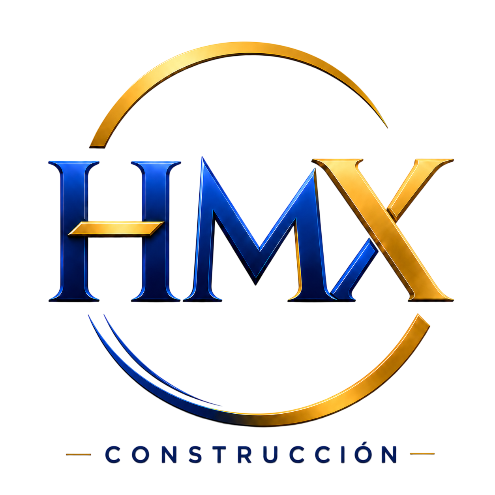
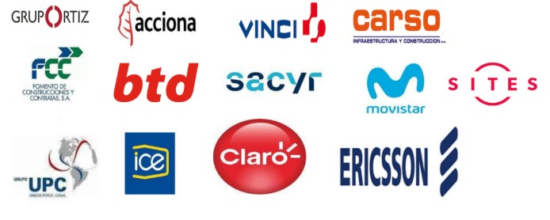

Ingeniería, telecomunicaciones, electricidad, obras civiles y sistemas hidráulicos para proyectos de alta complejidad en Latinoamérica.
Ver Servicios ContactarHMX PRIME GLOBAL BUSINESS SRL. es una empresa filial de HMX SERVICES CENTROAMERICA S.A. con casa matriz en la Ciudad de Panamá. Especializada en el desarrollo integral de proyectos de ingeniería, construcción, telecomunicaciones, sistemas eléctricos, obras civiles y soluciones hidráulicas para almacenamiento, tratamiento y distribución de agua.
Nuestra organización cuenta con experiencia en proyectos ejecutados en Panamá, Costa Rica, Guatemala, Nicaragua, Chile y República Dominicana, participando en obras de alta complejidad para sectores públicos y privados.
La combinación de experiencia técnica, personal altamente calificado y una estructura organizacional flexible nos permite ejecutar proyectos bajo estándares de calidad, seguridad, eficiencia operativa y cumplimiento ambiental.
Nos orientamos a ser proveedores de importancia para nuestros clientes y establecer alianzas estratégicas de negocios convenientes y duraderas.
HMX provee servicios y productos de calidad superior, confiables, conforme a especificaciones, económicamente aceptables y ofrece soluciones innovadoras y concretas a las necesidades de sus clientes.
Ser el mejor proveedor de soluciones integrales del mercado nacional, a través de la diversificación de nuestra cartera de productos y servicios, destacándonos por nuestra eficiencia, convirtiéndonos en la primera opción para nuestros clientes.
Relación con los clientes: la preocupación primaria. Nuestros clientes nos deben preferir por la calidad de los servicios y productos entregados.
Relación con los accionistas: satisfacer su deseo de contar con una inversión segura y líquida, que ofrezca una tasa atractiva de rentabilidad.
Diseño y construcción de temporal eléctrico en Puente Atlántico, centros de hemodiálisis, CAPSIS, telecomunicaciones GUPC, peajes INDRA, radiobases DIGICEL, obras de acueducto, ciudad hospitalaria, techos de esperanza y tanques vitrificados.
Construcción de planta externa telefónica 60.000 líneas y ampliación de red móvil COMCEL.
Ampliación de red móvil Movistar e instalación de 3 tanques de acero vitrificado para almacenamiento de agua potable.
Ampliación red móvil Ericsson/Claro, fibra óptica San José-Caldera, electrificación subterránea de San José, ampliación ICE y red 5G site LATAM, autopista Ruta 27, ampliación autopista Cañas Limonal
Mantenimiento de red móvil ORANGE e instalación de tanques de acero vitrificado para agua potable.
Instalación de tanque de acero inoxidable para almacenamiento de líquidos industriales en planta BIMBO.
Empresas e instituciones públicas y privadas en Centroamérica y Latinoamérica, incluyendo constructoras, operadores móviles, hospitales, entidades estatales y desarrolladores industriales.

Ing. Julio Ferruzola Osorio
+(507) 6244-6145
julio.f@hmx-services.com
Ing. Federico Rojas Mora
+(506) 8994-4002
federico.rojas@hmx-services.com
Oficina Panamá
Villas de Howard 1549, Veracruz, Arraiján, Ciudad de Panamá, Panamá.
Oficina Costa Rica
Santa Ana, Piedades, calle San Marcos, última edificación a mano derecha, San José, Costa Rica.